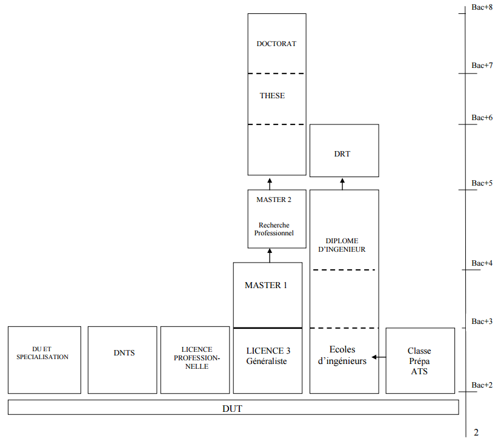

Gaume Louis
Je m'appelle Louis GAUME, j'ai 18 ans. Je suis né à Châteauroux le 19 juillet 1997.
Je fais du sport dès que j'ai du temps c'est-à-dire assez rarement en ce moment. J'aime écouter de la musique de différents styles.
Je joue de temps en temps aux jeux-vidéos et comme le sport c'est assez rare en ce moment.
Je possède un appartement à Limoges mais je rentre chez mes parents à Châteauroux le week-end.
Avant le Dut
Avant d'arriver dans le Limousin, à l'IUT, j'ai effectué un parcours scolaire assez classique.
En effet j'ai obtenu un Bac S avec mention assez bien en 2015 au lycée Jean Giraudoux à Châteauroux.
J'ai commencé à programmer pour la première fois chez moi pour un jeu en Squirrel, j'ai tout de suite aimé.
Je n'ai jamais réalisé le jeu mais il s'agissait ici de coder un serveur pour pouvoir ajouter des fonctions.
Je me suis amusé à ajouter plein de choses jusqu'a ce que mon serveur ressemble à un serveur RP (RolePlay : mode de jeu qui consiste à incarner un personnage et de jouer le jeu).
En terminal j'ai choisi de suivre l'option ISN (Informatique et sciences du numériques). De plus au sein de ce cours nous avons réalisé un jeu en groupe. De notre côté, nous avons choisi de réaliser un petit jeu que nous avons nommé "GUNS". C'est un jeu qui se joue à deux joueurs, le but est de tuer l'autre en lui tirant dessus. Chacun se trouve dans une moitié de la carte. La réalisation de ce jeu m'as confirmé mon intérêt pour l'informatique.
Pendant le Dut
Dès mon arrivée à l'IUT, les cours m'ont tout de suite plu. En effet je trouvais les cours intéressant, nous avons rapidement pratiquer sur machine ce qui permet d'avoir des résultats et de mieux comprendre comment cela fonctionne.
L'organisation est effectué de cette manière. Nous avons d'abord des cours en amphithéâtre, nous effectuons ensuite des exercices sur papier en TD en rapport avec le cours et enfin nous les passons sur machine en TP.
Le département possède aussi une association étudiante qui s'appelle l'OEIL. Elle nous a permit, dès le début d'année de nous rapprocher grâce à une relation parrain-filleul entre 1ère et 2ème année. Il y a donc une vraie cohésion au sein du département Informatique. L'ambiance est plus que bonne au sein de la promo.
La cadence de travail est assez soutenu et les journées sont souvent très longues, cela n'est pas rare d'avoir des journées comme 8h-19h30.
J'ai obtenu mon premier semestre avec 11,13. La formation me plaît, j'espère continuer jusqu'au bout.
Le Dut
Ce DUT forme des assistants ingénieurs et des chefs de projet en informatique de gestion et en informatique industrielle.
Immédiatement opérationnels en développement logiciel et matériel, ils participent à la conception,
la réalisation et la mise en œuvre de systèmes informatiques en fonction des cahiers des charges qui leur sont soumis.
Ils sont capables de répondre aux besoins des entreprises en matière d'administration de réseaux, de conception et de réalisation de programmes, d'assistance technique, de gestion de bases de données…
Au fil des années, le titulaire du diplôme peut exercer les fonctions de spécialiste méthodes, d'architecte réseau, de développeur-intégrateur de sites Internet ou de bases de données,
de responsable bureautique, de technico-commercial, de spécialiste de systèmes d'imagerie (télédétection, télémédecine, vision par ordinateur…).
Source : Onisep
Pour moi le DUT est une bonne formation dans le sens ou on apprend beaucoup de choses que l'on peut mettre en pratique rapidement. Nous sommes donc capable de coder,
créer des sites webs assez rapidement. Nous apprenons aussi rapidement comment organiser des projets au sein d'une équipe ce qui nous donne un aperçu du monde professionnel.
L'année n'est pas finie et je pense être capable de faire beaucoup de choses d'un point de vue informatique.
Apres le Dut
Après le DUT de nombreuses portes s’ouvrent. Nous pouvons essayer d'intégrer une école d'ingénieur(BAC+5), d'effectuer une licence professionnel (BAC+3) ou encore d'aller à la FAC (Master). A la fin du DUT je pense avoir acquis de nombreuses compétences.
